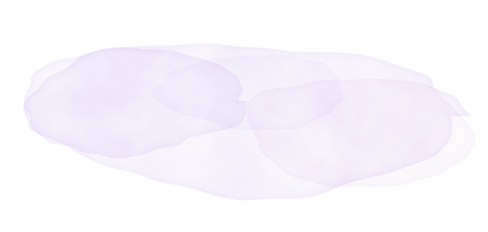

Mensaje de Oriana Sofía
Quince años de sueños, risas y aprendizajes…
Quiero celebrar esta etapa tan especial de una manera diferente: compartiendo un día lleno de música, alegría y momentos bonitos con las personas que hacen parte de mi vida.
Y tú eres una de ellas.
Oriana Sofía

Faltan
para celebrar juntos este día tan especial
Guarda la fecha
El gran día
-
Fecha
Domingo 1 de noviembre de 2026
-
Hora
Estar en el punto de encuentro antes de las 7:00 a. m.
-
Plan
Pasadía con piscina
Punto de encuentro
Barrio España, TR 44 calle 26D12
Cartagena
Referencia: Tienda Brisas del Sur
Código de vestuario
Semiformal
El morado y el lila quedan reservados para la quinceañera.
Llega semiformal y no olvides tu traje de baño para disfrutar la piscina.
Lluvia de sobres
Tu presencia es mi mejor regalo. Si deseas tener un detalle conmigo, habrá una lluvia de sobres.
¿Me acompañas?
Me hará muy feliz contar contigo. Confírmame tu asistencia por WhatsApp.